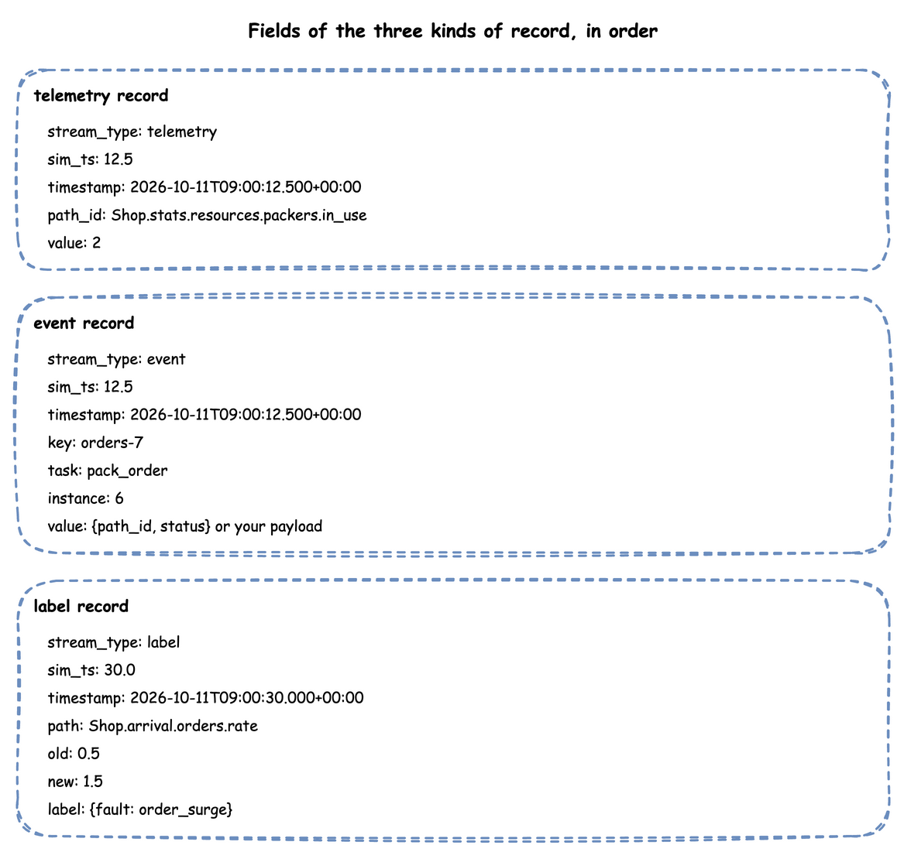
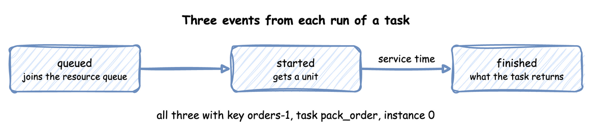

Records and Telemetry
Everything a simulation publishes is a record of one of three kinds: a telemetry record for a single value, an event record for something that happened to an entity, and a label record for the ground truth of a scenario step. The records have the shape of the TelemetryPayload, EventPayload and LabelPayload models. They are the same whichever way the simulation was written.
All three share stream_type, sim_ts and timestamp. Telemetry names its value in path_id. An event names its entity in key, and its task in task and instance. A label carries what a step changed:

Record Shape
Every sink, router and when predicate receives records as plain dictionaries, with these keys in this order. The type is the Python type a sink receives, and the JSON type a JSON sink writes:
| Field | Type | Telemetry | Event | Label |
|---|---|---|---|---|
stream_type |
string | "telemetry" |
"event" |
"label" |
sim_ts |
float | simulation seconds | simulation seconds | simulation seconds |
timestamp |
string | logical time | logical time | logical time |
path_id |
string | the name of the value | ||
key |
string | the entity's key, such as orders-1 |
||
task |
string or null | the task's name, or None |
||
instance |
any JSON value or null | the task's instance id, or None |
||
path |
string or null | the registry path the step changed, or None |
||
old |
any JSON value or null | the value before the step, or None |
||
new |
any JSON value or null | the value after the step, or None |
||
label |
object | the step's record mapping |
||
value |
any JSON value | a single value | the event's value |
This is how ConsoleEgress prints a statistic and the three events of one task:
This is how a JSON Lines sink writes two labels:
sim_ts is simulation seconds. timestamp is logical_start_time plus the simulation time. It is an ISO 8601 string with milliseconds and the offset of the run's time zone, such as 2026-10-03T12:00:00.000+10:00, or +00:00 in UTC, the default. Clocks and Pacing describes the zone. sim_ts is rounded to the millisecond and timestamp cut to it, so their milliseconds can differ by 1.
Field Values
sim_tsis rounded to three decimal places and is always a float, so simulation time 0 is0.0.keyandpath_idare strings.bytesandbytearrayare decoded to strings. Any other type, such as anint, raises a PydanticValidationErrorat the call.taskis the name of a builder or YAML task.instanceis its instance id: an integer from 0 for a builder or YAML task, or what a low-level process passes.publish_eventandpublish_labeldo not check the type oftask,instanceorpath, so a low-level process that passes another type writes that type. The types in the table are what the builder and YAML write.value,old,newandlabelare converted to plain JSON values before any sink sees them. A Pydantic V2 model becomes a dictionary, a datetime becomes an ISO string, and a NaN or an infinity becomesNone. This holds at any depth, in a model as in a plain dictionary.
Task Events
@app.task and a YAML task publish three events for each run that is served, all with the entity's key, the task's name and its instance id:

| Event | value |
|---|---|
| queued | {"path_id": "<sim_id>.service.<service>", "status": "queued"} |
| started | {"path_id": "<sim_id>.service.<service>", "status": "started"} |
| finished | exactly what the task returns, or the YAML payload |
A run that is not served, or fails, publishes one other event in place of its finished event:
| Event | When | value |
|---|---|---|
| balked | its balk condition held, so it never joined the queue and publishes no queued. Or a resource it asked for already held queue_limit requests; then it publishes no queued either, when that resource is its first and nothing is waited for before it. A task that was preempted and asks again when the queue is full balks after started and preempted |
{"path_id": ..., "status": "balked"}, with "resource": ... when a resource refused it |
| reneged | its patience ran out before it was served; it left the queue at that moment |
{"path_id": ..., "status": "reneged"} |
| failed | its fail condition held, its wait failed, or its function raised |
{"path_id": ..., "status": "failed", "reason": ...} |
An interrupted run publishes these as well, and its finished event when it ends:
| Event | When | value |
|---|---|---|
| interrupted | an interrupt reached it; its units and waits were given up |
{"path_id": ..., "status": "interrupted", "cause": ...} |
| preempted | a request of a lower priority value took its unit | {"path_id": ..., "status": "preempted", "resource": ..., "preempted_by": ..., "usage_since": ...} |
| resumed | after an interrupt or a preemption, it holds its units again and is served | {"path_id": ..., "status": "resumed"} |
status, path_id and reason are strings. cause is any JSON value the interrupt was given, or None. resource is the name of the resource that was taken or that refused the task. In a preempted record, preempted_by is the key of the entity whose request took the unit, or None when a process that is not a task took it. usage_since is the simulation time at which the preempted task was granted the unit. When a subscribe interrupts the instance, the cause is {"event": name, "value": value}. value is what the event carried. name is the subscribed task's name for a task, the process's name for a process, and None for any other event.
With statistics at basic or above, entities that enter and leave are counted as <sim_id>.stats.flows.<arrival>.started, .finished and .in_system. From minimal, each task's <sim_id>.stats.tasks.<task>.in_progress is published. Each of the outcomes above is counted as <sim_id>.stats.tasks.<task>.balked, .reneged, .failed, .interrupted, .preempted and .resumed, published once the first one happens. A flow that ends in a failure is counted as <sim_id>.stats.flows.<arrival>.failed. Patience shows balking and reneging, Failures shows failures, and Interruptions shows interrupts and preemption. A failed task publishes started before its failure when it got that far, and a task with a wait publishes queued when the wait starts.
A resource with a breakdown publishes an event at each failure and each repair. Its key is the resource's name, and it has no task or instance:
| Event | When | value |
|---|---|---|
| down | the resource failed; its capacity is 0 until the repair | {"status": "down", "reason": "failure"} |
| repaired | the repair ended; its capacity is current_cap again |
{"status": "repaired", "reason": "failure"} |
With statistics at minimal or above, such a resource publishes <sim_id>.stats.resources.<name>.down, which is 1 while it is down. From basic, it also publishes .downtime, the seconds it has been down, and .failures. Model Breakdowns checks them against the events.
A task with no service has {"status": ...} without path_id. A timed step, with a service and no resource, publishes no queued. A task with no service, resource or get publishes only the finished event, as soon as it starts. The key is the arrival's name and a counter from 1, such as orders-1, on every event of every task the entity passes through. Task Flow describes it. A low-level process publishes whatever it passes to env.publish_event(key, value, task=..., instance=...).
Telemetry Names
| Published by | path_id |
|---|---|
| the built-in statistics | <sim_id>.stats.<kind>.<name>.<statistic>, such as Shop.stats.resources.packers.in_use; Reference, Statistics lists every name |
| replications, once at the end | <sim_id>.stats.<measure>.replication.<i> for each replication from 1, then <sim_id>.stats.<measure>.mean, .half_width and .n. The measure is a statistic's name without the sim id, such as tasks.pack.wait_mean |
context.publish(name, value) and a YAML telemetry function |
<sim_id>.<name> |
env.publish_telemetry(path_id, value) |
path_id, as given |
| the lag monitor | system.simulation.lag_seconds, every lag_interval: by default every simulation second at a factor above 0, and none at factor: 0 (Clocks and Pacing) |
| docs/snippets/pages/records.py:telemetry | |
|---|---|
Reserved Payload Keys
Some keys of a record's value belong to desflow, not to the data. They are the keys that start and end with two underscores around a name of at least one character, such as __table__ or __stream__. This holds for the keys of an event's value, and of a telemetry value that is a mapping. A sink that routes by such a key uses it and removes it: PostgresEgress writes the record to the table its __table__ names, and RedisEgress to the stream its __stream__ names. Every other sink drops every such key, and logs one warning per key the first time it meets it. These sinks are KafkaEgress, the Parquet, JSON Lines and Iceberg sinks, and ConsoleEgress:
The record itself is not changed, so a PostgreSQL sink on the same run still finds its __table__. A sink drops the keys before its router sees the record, so a Kafka topic_router or a storage path_router cannot route by such a key. PostgresEgress and RedisEgress drop only their own routing key, so any other such key reaches their rows as data. Rename a key such as __source__ to source to keep it as data.
What Each Sink Writes
Every sink receives the events and telemetry above, and a when: labels sink receives the labels instead. What each writes differs:
| Sink | Writes |
|---|---|
ConsoleEgress |
one line per record: [TEL], [EVT] or [LBL], followed by the record without stream_type. Each batch is one INFO log call, so only a batch's first line carries the logging format's prefix |
KafkaEgress |
the record as JSON, without stream_type unless include_stream_type=True; the message key is path_id for telemetry and key for an event. A label goes to event_topic with no key |
RedisEgress |
the record as JSON in one payload field, with any __stream__ key removed |
ParquetStorageEgress, JsonlStorageEgress, IcebergStorageEgress |
without a router, one flat row per event or label, with an event's value mapping unpacked into columns, and no telemetry; with a router, each record as the router leaves it |
PostgresEgress |
an event or telemetry record whose value is a mapping, written to the table its __table__ key names; the key is removed. The sink adds sim_ts and timestamp to the row, and for an event key as event_id, task and instance, or for telemetry path_id, as Egress describes. A label is written as the columns sim_ts, timestamp, path, old, new and label, the last three as JSON text |
In a flat row, a finished event's columns are its task's payload only. The queued and started rows of a task carry path_id and status. Its finished row has them null unless the payload holds them. Egress describes the file sinks.